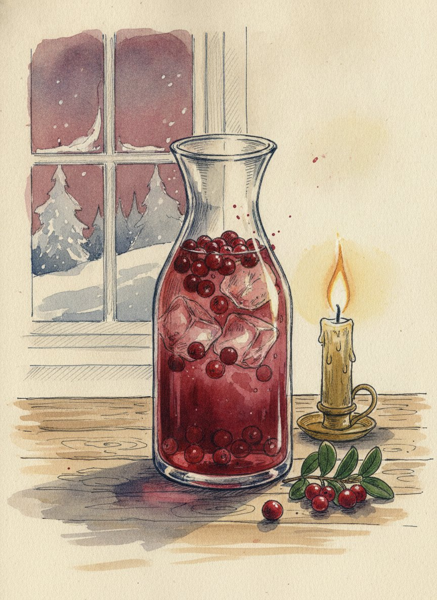
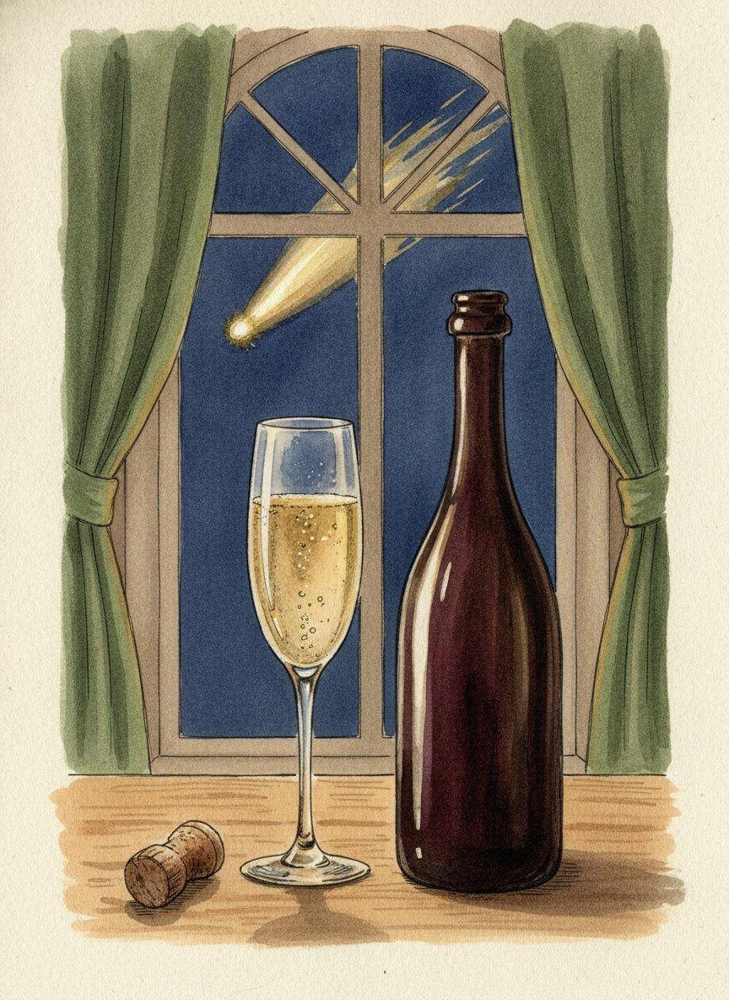
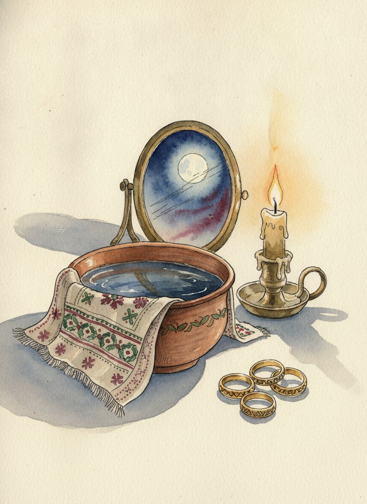
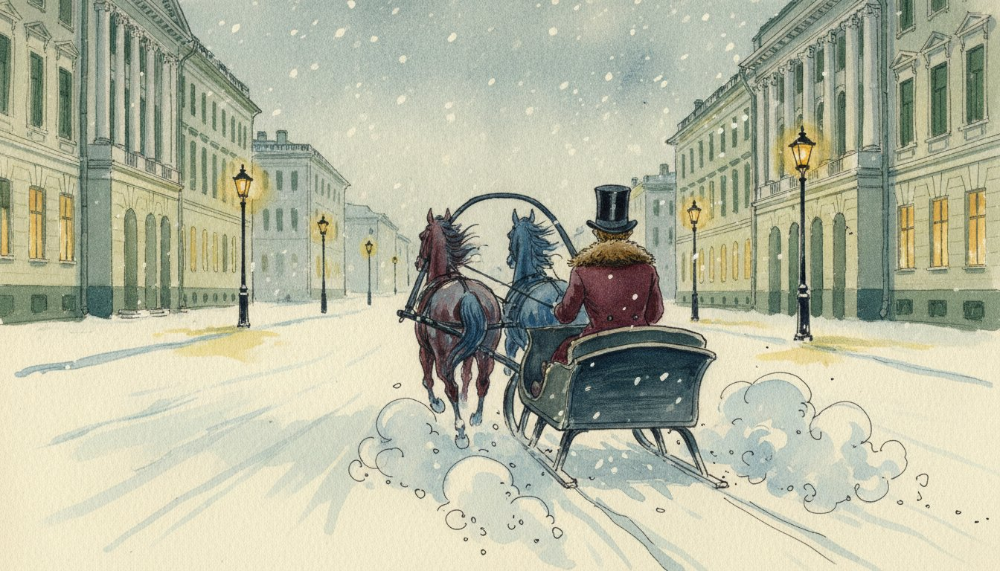
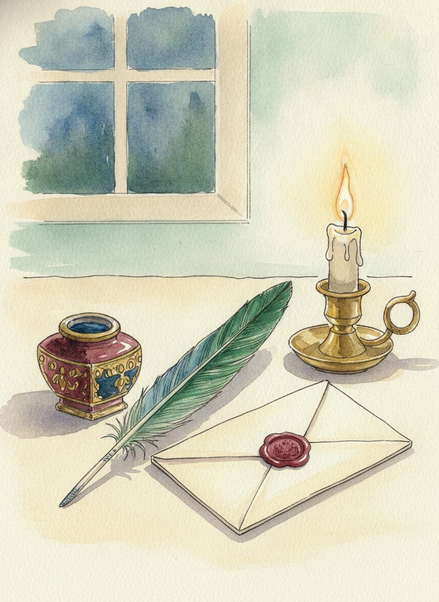

Ужин по «Евгению Онегину»: ростбиф и «вино кометы», как у Talon, пирог и брусничная вода, как у Лариных. Рецепты, план по часам, игры и истории для стола. Укажите число гостей, и список покупок соберётся сам.
«Евгений Онегин» читали в школе почти все. Но мало кто замечает, сколько в нём еды. В первой главе Онегин мчится в санях на Невский, в модный французский ресторан Talon: там «пробка в потолок», ростбиф, трюфели, страсбургский пирог, сыр и ананас. А в пятой главе мы попадаем на именины Татьяны в деревне Лариных: жирный пирог, жаркое, бланманже, цимлянское и чай.
Это две разные России одного времени. Петербург ест по-французски и по-английски, пьёт шампанское и говорит на смеси языков. Деревня держится «привычек милой старины»: квас, блины на Масленицу, пироги и варенье. Мы соберём оба стола за один вечер. Гости начнут у Talon, а закончат у Лариных за чаем.
Когда устроить
25 января, Татьянин день. Именины Татьяны Лариной из пятой главы. Лучший повод: можно поздравить всех знакомых Татьян и пригласить их почётными гостями.
6 июня, день рождения Пушкина. Летний вариант: чай на веранде или на даче, как в усадьбе.
Любой зимний вечер. Роман зимний: сани, мороз, святки, гадания. Зимой всё это особенно к месту.
Почему именно эти блюда
Мы взяли блюда, которые прямо названы в романе, и приготовили их так, чтобы всё получилось на обычной кухне. Там, где оригинал дома не повторить, мы честно пишем: в книге так, у нас так, и вот почему. Например, настоящий страсбургский пирог делали из гусиной печени и везли из Франции, а мы делаем нежный паштет из куриной печени. Он готовится за 40 минут и стоит в десять раз дешевле.
Почти всё готовится накануне. В день праздника вы ставите в духовку только горячее.
Как устроен вечер
У Talon. Гости приходят «с мороза». В бокалах игристое, «вино кометы», для непьющих брусничная вода. На столе паштет «Страсбургский пирог», сыр и ананас. Пока все собираются, играем в шарады.
Горячее. Садимся за стол. Ростбиф «окровавленный», как у Онегина, или пожарские котлеты, которые Пушкин советовал другу. Рассказываем истории из шпаргалки.
Именины у Лариных. Пирог с капустой, цимлянское. Между пирогом и десертом игра «Продолжи строку».
Чай и бланманже. Бланманже с вареньем, чай. Под конец святочные гадания, как в пятой главе.
Два варианта горячего
Как у Talon: ростбиф. Кусок говядины, запечённый целиком, розовый внутри. Работы 20 минут, остальное делает духовка. Нужен термометр для мяса (стоит около 500 рублей), без него легко пережарить. Мясо дорогое, но это главное блюдо первой главы.
Как в Торжке: пожарские котлеты. Нежные куриные котлеты в хрустящей панировке из белого хлеба. Дешевле ростбифа, нравятся детям и тем, кто не любит мясо с кровью. Работы больше, около часа, но котлеты можно обжарить заранее и прогреть в духовке.
Выберите один. Как меняются план по часам и покупки, написано в тайминге.
Список покупок
Укажите, сколько будет гостей и какое горячее вы выбрали, и список пересчитается сам. Отмечайте купленное галочкой прямо в магазине.
Что купить
Все блюда считаются на всех гостей вместе с детьми. Пирог и паштет считаются целыми рецептами: один на каждые 6-8 гостей. Вино: одна бутылка игристого и одна бутылка красного на троих взрослых, плюс одна бутылка цимлянского на стол. Соль, перец, уксус и специи из обычного шкафчика в список не входят. Отмеченные покупки запоминаются в этом браузере.
Горячее выберите одно: ростбиф или пожарские котлеты. Время указано полное, вместе с остыванием и ожиданием.
Если за столом дети
Пушкинский вечер детям интересен, если дать им дело: перо, сургуч, шарады и гадания. А почти всё меню им подходит, если выбрать пожарские котлеты.
Что подходит детям
Пожарские котлеты - лучшее горячее для детей. Если среди гостей много детей, выбирайте этот вариант, а не ростбиф.
Ростбиф - детям отрежьте ломтики с краёв куска, они прожарены сильнее.
Пирог с капустой - без изменений.
Паштет - сделайте детям отдельную баночку без коньяка (смотрите замены в рецепте). Многие дети его любят на гренках.
Сыр и ананас - ананас дети съедят первым. Мягкий сыр с сильным запахом им обычно не нравится: положите рядом кусочек простого твёрдого сыра.
Бланманже с вареньем - главный детский десерт вечера. Дайте детям самим положить варенье в бокалы.
Напиток. Брусничная вода в бокалах для шампанского, с газированной водой, чтобы были пузырьки, как у взрослых. Можно чокаться со всеми под первый тост.
Чем занять детей
Письмо гусиным пером. Купите в магазине для творчества перо для каллиграфии и тушь или просто обмакивайте настоящее перо в разведённую гуашь. Пусть дети напишут письмо, как Татьяна, и запечатают его каплей воска (воск капает взрослый).
Силуэты. В пушкинское время модно было вырезать профиль человека из чёрной бумаги. Посадите ребёнка боком к лампе, приколите на стену белый лист, обведите карандашом тень профиля и вырежьте из чёрной бумаги. Получится портрет «как у Пушкина», его можно подарить родителям.
Шарады. Для детей отложите простые карточки: бал, сани, няня, качели, гусиное перо, театр.
Жмурки и горелки. Игры, в которые играли дети в усадьбах. В жмурках водящему завязывают глаза, и он ловит остальных. В горелки играют парами: водящий («горящий») стоит впереди, по сигналу последняя пара бежит вперёд с двух сторон и старается снова взяться за руки, а водящий ловит одного из них. Для горелок нужен двор или большая комната.
Гадания. Детям очень нравятся предсказания из миски. Задания на карточках им тоже по силам.
Безопасность. - Свечи на столе ставьте подальше от края, где сидят дети. Воск для печатей капает только взрослый. - Для детей младше 5 лет уберите орехи с сырной доски и нарежьте ананас мелко. - Мёд в брусничной воде нельзя детям до года: сделайте им порцию на сахаре. - Игристое открывают взрослые и в сторону от детей.
В списке покупок внизу написано, сколько продуктов добавить на детей.
Тайминг и список покупок
Расчёт на 6 взрослых, гости в 19:00. Основной план написан для ростбифа, а ниже есть вариант с пожарскими котлетами. Если время другое, сдвиньте всё на ту же разницу.
Половина работы делается накануне: паштет, бланманже и брусничная вода должны постоять ночь. В день праздника вы печёте пирог и готовите горячее.
Накануне
Когда
Что делать
Сколько времени
днём
Купить продукты по списку ниже. Сыр, мясо и печень кладите в холодильник сразу
-
18:00
Бланманже: замочить желатин, сделать миндальное молоко, оставить настаиваться на 30 минут
20 мин
18:20
Пока настаивается молоко: брусничная вода. Размять ягоды, залить тёплой водой с мёдом, накрыть
15 мин
18:40
Бланманже: процедить, соединить, разлить по бокалам, остудить и в холодильник
15 мин
19:00
Паштет: почистить печень, обжарить лук и печень, взбить, разложить по баночкам, залить маслом
40 мин
19:45
Начинка для пирога: нашинковать и потушить капусту, сварить яйца. Остудить, смешать, в холодильник
45 мин
20:30
Соус из хрена. Игристое и белое вино в холодильник
5 мин
вечером
Распечатать карточки, найти свечи и подсвечники, собрать плейлист
по настроению
Всего накануне около 2 часов 20 минут работы на кухне. Брусничную воду перед сном или утром переставьте в холодильник.
В день праздника (гости в 19:00)
Когда
Что делать
Сколько времени
14:00
Тесто для пирога: замесить и поставить подниматься
15 мин
15:30
Пирог: раскатать, собрать с начинкой, дать постоять 20 минут
20 мин
15:50
Включить духовку на 190 °C. Смазать пирог желтком
5 мин
16:00
Пирог в духовку на 35-40 минут
-
16:40
Вынуть пирог, смазать маслом, накрыть полотенцем
2 мин
17:00
Достать мясо из холодильника, обсушить, посолить, поперчить. Процедить брусничную воду
10 мин
17:15
Накрыть стол, расставить свечи, разложить варенье по блюдечкам
30 мин
17:45
Включить духовку на 160 °C. Подготовить картофель на противне
10 мин
18:00
Достать сыр и паштет. Обжарить мясо на сковороде
10 мин
18:10
Мясо с термометром на решётку над картофелем, в духовку
2 мин
18:20
Нарезать ананас, собрать сырную доску. Подсушить гренки в духовке рядом с мясом (на нижнем уровне, 12-15 минут при 160 °C)
20 мин
18:50
Зажечь свечи, включить музыку. Брусничная вода в кувшин со льдом
5 мин
19:00
Гости пришли. Игристое и брусничная вода, паштет, сыр и ананас. Шарады
-
19:00-19:10
Термометр показал 52-54 °C: вынуть мясо, накрыть фольгой. Духовку на 220 °C, картофель допекается 15-20 минут
3 мин
19:30
За стол. Нарезать ростбиф, подать с картофелем и соусом из хрена. Истории из шпаргалки
5 мин
20:15
Викторина «Правда или миф?». Духовку выключить, пирог под фольгой прогреть в остывающей духовке 15 минут
При гостях вы встаёте из-за стола только три раза, каждый на пару минут: вынуть мясо, нарезать его и поставить пирог греться.
Вариант с пожарскими котлетами
Если вместо ростбифа вы готовите пожарские котлеты, меняется только вечер в день праздника.
Когда
Что делать
Сколько времени
накануне, 20:30
Нарезать мякиш для панировки кубиками, оставить сохнуть на противне на ночь
15 мин
16:45
Фарш: прокрутить курицу с размоченным хлебом, натереть масло, в холодильник на 30 минут
20 мин
17:15
Накрыть стол, свечи, варенье
30 мин
17:45
Котлеты: слепить, запанировать, обжарить партиями. Сложить на противень
45 мин
18:30
Включить духовку на 200 °C, картофель в духовку на 40 минут. Собрать сырную доску, гренки
20 мин
19:00
Гости пришли
-
19:10
Картофель готов, накрыть фольгой. Духовку на 180 °C, котлеты в духовку на 15 минут
2 мин
19:30
За стол: котлеты с картофелем и брусничным вареньем
-
Дальше всё так же, как в основном плане.
Список покупок (вариант с ростбифом)
Овощи, фрукты, зелень
Картофель мелкий или средний - 1,2 кг
Капуста белокочанная - 1,2 кг (половина среднего кочана)
Лук репчатый - 2 шт. (1 в паштет, 1 в пирог)
Чеснок - 1 головка (нужно 3 зубчика)
Тимьян свежий - 1 упаковка (в паштет и к мясу; можно розмарин к мясу)
Укроп - 1 пучок (по желанию, в пирог)
Мята - 1 пучок (по желанию, к бланманже)
Ананас - 1 шт. (или 1 банка кольцами)
Лимон - 1 шт.
Брусника свежая или замороженная - 500 г
Мясо и печень
Говядина: толстый или тонкий край без кости - 1,3-1,5 кг одним куском
Печень куриная охлаждённая - 500 г
Молочное и яйца
Масло сливочное 82,5% - 310 г (2 пачки по 180 г)
Молоко 3,2% - 750 мл (1 пакет 1 л; 250 мл в тесто, 500 мл в бланманже)
Сливки 20% - 100 мл (в паштет)
Сливки 33% - 300 мл (в бланманже)
Сметана 20% - 350 г (150 г в соус к мясу, остальное к пирогу)
Яйца С1 - 6 шт. (1 в тесто, 4 в начинку, 1 для смазки; купите десяток)
Сыр мягкий с мытой корочкой - 200 г
Сыр мягкий с белой корочкой (камамбер или бри) - 200 г
Сыр твёрдый выдержанный - 150 г (по желанию)
Бакалея
Мука пшеничная - 550 г (пачка 1 кг)
Дрожжи сухие быстродействующие - 1 пакетик 7 г
Сахар - 150 г
Миндаль очищенный или миндальные лепестки - 100 г
Желатин - 15 г
Мёд - 5 ст. л. (около 130 г) и ещё 2 ст. л. к сыру
Варенье: вишнёвое, малиновое или брусничное - 2-3 банки (на бланманже, к паштету и на блюдечки)
Хрен столовый - 1 банка
Горчица зернистая - 1 банка (по желанию)
Грецкие орехи - 50 г (по желанию)
Масло растительное без запаха
Мускатный орех, палочка корицы, гвоздика
Соль крупная, чёрный перец горошком
Чай чёрный листовой
Хлеб
Багет - 1 шт.
Напитки
Игристое брют - 2 бутылки (1 на 3 взрослых; как выбрать, в разделе про вино)
Красное вино к мясу (бордо или российский купаж) - 2 бутылки
Цимлянское или другое красное игристое - 1 бутылка (к пирогу и десерту)
Коньяк - 2 ст. л. в паштет (по желанию)
Газированная вода - 1 л (для брусничной воды с пузырьками)
Квас или яблочный сок прямого отжима - по желанию
Хозяйственное
Термометр для мяса со щупом (если нет)
Фольга, пищевая плёнка, пергамент
Хлопковая нитка для перевязки мяса
Марля (для бланманже)
Свечи - 6-10 шт.
Плотная бумага кремового цвета для печати приглашений и карточек
Вариант с пожарскими котлетами: что поменять в покупках
Не нужно: говядина, хрен, термометр, нитка. Сметаны хватит 200 г.
Купите дополнительно: - Куриное филе грудки - 600 г - Куриное филе бедра без кожи - 400 г - Батон белый - 2 шт. (450 г мякиша без корок: 150 г в фарш, 300 г на панировку) - Сливки 10-20% - 150 мл (или молоко) - Масло сливочное - ещё 140 г (80 г в фарш, 60 г на жарку), то есть всего 3 пачки по 180 г - Яйца - ещё 2 шт. (всего 8, десятка хватит)
Если за столом дети
Добавьте на каждых 2 детей: - Брусника - ещё 250 г и мёд или сахар (ещё полрецепта брусничной воды) - Котлеты: по 1 на ребёнка (в варианте с котлетами добавьте 200 г филе на двоих) - Бланманже: ещё 2 порции (плюс треть рецепта)
Игристое, вино и коньяк считайте только на взрослых. Подробнее в разделе Если за столом дети.
Рецепты
У Talon
Паштет «Страсбургский пирог»
Активно
40 мин
Всего
5 ч (с застыванием)
Порции
6-8 (около 650 г паштета)
Духовка
180 °C (только для гренок)
Закуска из ресторана Talon. В книге это паштет из гусиной печени, запечённый в тесте и привезённый из Франции. Дома такой не повторить: гусиная печень (фуа-гра) стоит дорого, а запекать паштет в тесте долго и сложно. Мы делаем нежный паштет из куриной печени со сливками и коньяком, а «нетленным» его делает слой масла сверху, как в старых кухнях.
История
Страсбург, город на востоке Франции, в XVIII веке прославился паштетами из гусиной печени. Паштет запекали в толстой корке из теста: тесто защищало начинку в дороге, как коробка. Потом паштеты научились запаивать в банки, и их стали возить по всей Европе, в том числе в Петербург. Поэтому у Пушкина пирог «нетленный»: он не портился в долгом пути и мог ждать на полке ресторана.
Слово «пирог» здесь не ошибка. Французское pâté значит и «паштет», и «пирог», и в русском языке пушкинского времени страсбургский паштет часто называли пирогом.
Ингредиенты
печень куриная (охлаждённая, не замороженная)500 г
лук репчатый (около 100 г)1 шт
масло сливочное 82,5% (20 г для жарки, 90 г в паштет, 40 г для заливки сверху)150 г
сливки 20%100 мл
коньяк (по желанию, можно заменить 1 ст. л. сока лимона)2 ст. л.
соль (без горки, дальше по вкусу)1 ч. л.
перец чёрный молотый0,5 ч. л.
мускатный орех молотый1 щепотка
тимьян свежий (или 0,5 ч. л. сушёного)2-3 веточки
К подаче
багет1 шт
брусничное или клюквенное варенье (по желанию)3-4 ст. л.
Шаги
1. Подготовить печень · 10 мин
Промойте печень холодной водой и обсушите бумажным полотенцем. Осмотрите каждый кусочек: отрежьте белые плёнки и жилки, жир и зеленоватые пятна, если они есть. Крупные доли разрежьте пополам, чтобы все кусочки были примерно одного размера.
2. Обжарить лук · 7 мин
Лук очистите и мелко нарежьте. Растопите на сковороде 20 г масла на среднем огне, выложите лук и жарьте, помешивая, 6-7 минут, пока он не станет мягким и прозрачным. Он не должен подгореть: тёмный лук даст горечь.
3. Обжарить печень · 6 мин
Прибавьте огонь чуть выше среднего. Выложите к луку печень одним слоем и листья тимьяна. Жарьте 2-3 минуты с одной стороны и 2-3 минуты с другой, не перемешивая всё время.
Разрежьте самый крупный кусочек. Внутри он должен быть бежево-розовым, но без красного сока. Если сок красный, жарьте ещё минуту.
4. Добавить коньяк и сливки · 3 мин
Влейте коньяк и дайте ему выкипеть 1 минуту. Потом влейте сливки, доведите до лёгкого кипения и снимите сковороду с огня.
5. Взбить · 5 мин
Переложите горячую печень вместе со всем соком в блендер или высокую кружку для погружного блендера. Добавьте 90 г мягкого масла кусочками, соль, перец и мускатный орех. Взбивайте 2-3 минуты, пока масса не станет совсем гладкой.
Попробуйте и досолите. Холодный паштет кажется менее солёным, чем тёплый, поэтому он должен быть чуть-чуть пересолен на вкус сейчас.
Для ресторанной гладкости протрите паштет через мелкое сито ложкой. Это необязательно, но так он получается как у Talon.
6. Разложить и «запечатать» · 5 мин + 4 ч в холодильнике
Разложите паштет по баночкам, разровняйте ложкой и постучите баночкой по столу, чтобы вышли пузырьки воздуха. Растопите оставшиеся 40 г масла и залейте сверху тонким слоем. Положите сверху листик тимьяна для красоты.
Остудите и уберите в холодильник минимум на 4 часа, лучше на ночь.
7. Гренки · 10 мин
В день праздника нарежьте багет ломтиками толщиной 1 см. Разложите на противне и подсушите в духовке при 180 °C 8-10 минут, до лёгкой золотистой корочки.
Практический блок
Подача. Достаньте паштет из холодильника за 20-30 минут до прихода гостей: так он станет мягче и лучше намазывается. Поставьте баночки прямо на доску, рядом гренки и маленькую ложку варенья. Сладкая брусника с паштетом соединяет оба стола вечера: петербургский и деревенский.
Замены. - Без алкоголя. Вместо коньяка 1 ст. л. сока лимона или 2 ст. л. яблочного сока. - Гусиная или утиная печень. Если найдёте, сделайте так же. Получится ближе к Страсбургу и дороже. - В тесте, как в книге. Купите 500 г слоёного теста, нарежьте квадратами 8×8 см, положите в центр ложку застывшего паштета, защипните конвертом и запекайте 20 минут при 200 °C. Подавайте тёплыми.
Сколько нужно. На закуску по 60-80 г паштета на человека. Рецепт рассчитан на 6-8 гостей.
Последние две строчки ужина Онегина у Talon. Это не рецепт, а красивая сборка: за 20 минут у вас будет доска, которую гости сфотографируют первой.
История
Лимбургский сыр родом из Лимбурга, области на границе нынешних Бельгии, Нидерландов и Германии. Это мягкий сыр с мытой корочкой: во время созревания его корку протирают рассолом. От этого у сыра очень сильный запах и нежная, почти текучая середина. Почему Пушкин назвал его «живым», комментаторы объясняют по-разному: зрелый сыр будто «течёт» и шевелится на тарелке, а ещё он продолжает зреть и меняться прямо на столе.
Ананас в пушкинское время был знаком роскоши. Его везли издалека или выращивали в оранжереях богатых усадеб: в холодной России это стоило огромных денег. Золотой ананас на столе ресторана означал, что здесь ужинают самые модные люди города.
Ингредиенты
ананас спелый (или 1 банка ананаса кольцами, 580 г)1 шт
мягкий сыр с мытой корочкой (лимбургский, мюнстер, эпуас или российский аналог)200 г
мягкий сыр с белой корочкой (камамбер или бри)200 г
твёрдый выдержанный сыр (по желанию, для тех, кто боится сильного запаха)150 г
мёд жидкий2 ст. л.
грецкие орехи (по желанию)50 г
Шаги
1. Достать сыр заранее · 1 ч (без вашего участия)
Выньте сыры из холодильника за час до подачи и не снимайте упаковку. Холодный сыр почти не пахнет и не имеет вкуса, а при комнатной температуре раскрывается.
2. Как выбрать спелый ананас · в магазине
Понюхайте основание: спелый ананас сладко пахнет. Потяните за листик в середине хохолка: у спелого он выдёргивается легко. Ананас должен быть тяжёлым для своего размера и чуть пружинить, если нажать пальцем. Зелёный, без запаха ананас дома не дозреет.
3. Разрезать ананас · 10 мин
Положите ананас на бок и отрежьте хохолок вместе с верхушкой, потом донышко.
Поставьте ананас стоя и срезайте кожуру сверху вниз полосами, по форме плода.
Разрежьте ананас вдоль на 4 части и срежьте с каждой твёрдую сердцевину.
Нарежьте мякоть ломтиками толщиной 1 см.
4. Собрать доску · 10 мин
Положите сыры целыми кусками на доску, «лимбургский» в центр. В каждый сыр воткните отдельный нож: так запах мягкого сыра не перейдёт на остальные. Вокруг разложите ломтики ананаса, орехи и маленькую мисочку мёда.
Практический блок
Подача. Ставьте доску на стол вместе с паштетом, когда приходят гости. Расскажите, что так и выглядел ужин Онегина: строчка «меж сыром лимбургским живым и ананасом золотым».
Где купить сыр. Настоящий лимбургский бывает в сырных лавках, но редко. Подойдёт любой мягкий сыр с оранжевой липкой корочкой и сильным запахом. Его делают и российские сыроварни: спросите в сырном магазине «сыр с мытой коркой».
Замены. - Если никто не любит сильный запах. Возьмите только камамбер и твёрдый сыр. - Консервированный ананас. Подходит, если свежий не найти. Слейте сироп и обсушите кольца полотенцем.
Аллергены. Молочное, орехи (если добавите).
Горячее, вариант «как у Talon»
Ростбиф с печёным картофелем
Активно
25 мин
Всего
2 ч 30 мин (с отдыхом мяса)
Порции
6
Духовка
160 °C для мяса, потом 220 °C для картофеля
Главное блюдо ужина Онегина у Talon. Кусок говядины целиком обжаривают на сковороде, а потом медленно доводят в духовке. Снаружи корочка, внутри розовое, сочное мясо. «Окровавленный» у Пушкина значит именно это: мясо с кровью, как его любили англичане.
История
Ростбиф (roast beef, «жареная говядина») - главное блюдо английской кухни. В начале XIX века всё английское было в Петербурге в моде: денди, фраки, скачки, сплин. Пушкин даже написал слово «roast-beef» английскими буквами, прямо посреди русских стихов, как модное иностранное словечко. А в другой строфе первой главы он шутит: «Но панталоны, фрак, жилет, / Всех этих слов на русском нет».
Ингредиенты
говядина: толстый или тонкий край без кости одним куском (или вырезка 1,2 кг)1,3-1,5 кг
соль крупная2 ч. л.
перец чёрный, крупно смолотый1 ч. л.
масло растительное без запаха2 ст. л.
масло сливочное30 г
чеснок3 зубчика
тимьян или розмарин3-4 веточки
Печёный картофель
картофель мелкий или средний1,2 кг
масло растительное3 ст. л.
соль1 ч. л.
Соус из хрена
хрен столовый из банки3 ст. л.
сметана 20%150 г
сахар1 щепотка
горчица зернистая к столу (по желанию)
Шаги
1. Достать мясо · 1 ч (без вашего участия)
За час до готовки достаньте мясо из холодильника. Срежьте сверху лишнюю плёнку, но жир оставьте. Обсушите мясо бумажным полотенцем со всех сторон и натрите солью и перцем.
2. Подготовить картофель · 10 мин
Включите духовку на 160 °C. Картофель хорошо вымойте щёткой, кожуру не снимайте. Мелкий оставьте целым, средний разрежьте пополам. Перемешайте на противне с маслом и солью.
3. Обжарить мясо · 10 мин
Разогрейте сковороду на сильном огне с растительным маслом, пока над ней не появится лёгкий дымок. Положите мясо и обжаривайте по 2 минуты с каждой стороны, включая торцы, до тёмно-коричневой корочки. В конце добавьте сливочное масло, раздавленный ножом чеснок и тимьян, и полейте мясо пенящимся маслом ложкой 1 минуту.
4. Довести в духовке · 40-60 мин
Переложите мясо на решётку над противнем с картофелем (или прямо на картофель). Воткните щуп термометра в самую толстую часть куска, чтобы кончик был в центре. Запекайте при 160 °C до нужной температуры внутри:
Как хотите
Температура в центре
Когда вынуть
С кровью, «окровавленный»
50-52 °C
через 35-45 мин
Розовый (так любят чаще всего)
54-56 °C
через 45-55 мин
Средний, без розового
60-62 °C
через 55-65 мин
Время зависит от толщины куска, поэтому ориентируйтесь на термометр, а не на часы.
5. Дать мясу отдохнуть · 15-20 мин
Выньте мясо, переложите на доску и неплотно накройте фольгой. Пока мясо отдыхает, температура внутри поднимется ещё на 3-4 градуса, а сок распределится по куску.
Тем временем увеличьте духовку до 220 °C и допеките картофель 15-20 минут, до румяной корочки.
6. Соус из хрена · 3 мин
Смешайте хрен со сметаной и щепоткой сахара. Соус можно сделать накануне.
7. Нарезать · 5 мин
Разрежьте нитки, если перевязывали. Нарежьте мясо острым ножом тонкими ломтиками, 5-7 мм, поперёк волокон (волокна видно на срезе как тонкие полоски: режьте не вдоль них, а поперёк).
Практический блок
Подача. Выложите ломтики на большое блюдо внахлёст, розовой серединой вверх, вокруг картофель, рядом соус из хрена и горчица. Подавайте с красным вином, бордо или каберне (смотрите вино к столу).
Замены. - Если гости не едят мясо с кровью. Доведите до 60-62 °C. Кто любит розовое, возьмёт ломтики из середины. - Дешевле. Возьмите «огузок» или «оковалок» (части задней ноги). Они жёстче, поэтому готовьте только до 54-56 °C и режьте как можно тоньше. - Не хочется возиться с говядиной. Выберите второй вариант горячего: пожарские котлеты.
Сколько нужно. 200-250 г сырого мяса на человека. Остатки ростбифа отлично идут на бутерброды на следующий день.
Аллергены. Молочное (масло, сметана в соусе), горчица (если подаёте).
Горячее, вариант «как в Торжке»
Пожарские котлеты
Активно
1 ч
Всего
1 ч 40 мин (с охлаждением фарша)
Порции
6 (12 котлет)
Духовка
180 °C
Второй вариант горячего, и самое «пушкинское» блюдо набора: его Пушкин сам советовал другу. Это нежные котлеты из куриного фарша со сливочным маслом внутри, обжаренные в хрустящей корочке из белого хлеба. Детям и тем, кто не ест мясо с кровью, они нравятся больше ростбифа.
История
Город Торжок стоял на главной дороге между Петербургом и Москвой. Путешественники меняли там лошадей и обедали. Самым известным был трактир семьи Пожарских, и его котлеты знала вся дорога. Название к князю Пожарскому из учебника истории отношения не имеет: оно просто по фамилии трактирщиков.
Рецепт обычно связывают с Дарьей Пожарской, дочерью хозяина. Есть красивая легенда, что котлеты понравились самому императору Николаю I. Подтверждённых документов про царя нет, так что рассказывайте её со словом «говорят».
И честная оговорка. Исследователи считают, что в 1826 году, когда Пушкин писал письмо, котлеты в Торжке были ещё из телятины или говядины, а куриные появились позже, в 1830-1840-е годы. Мы делаем ту куриную версию, которая и стала знаменитой.
Ингредиенты
Фарш
куриное филе грудки600 г
куриное филе бедра без кожи400 г
батон белый (без корок, для фарша)150 г
сливки 10-20% или молоко150 мл
масло сливочное 82,5%, замороженное80 г
соль1,5 ч. л.
перец белый или чёрный молотый0,5 ч. л.
мускатный орех1 щепотка
Панировка и жарка
батон белый вчерашний (без корок, для панировки)300 г
яйца С12 шт
масло сливочное или топлёное (для жарки)60 г
масло растительное (для жарки)3 ст. л.
Шаги
1. Подготовить хлеб · 10 мин (можно накануне)
Для панировки срежьте корки с 300 г батона и нарежьте мякиш как можно мельче, кубиками 3-4 мм. Разложите на противне и подсушите на воздухе 2-3 часа или в духовке при 100 °C 15 минут. Кубики должны стать сухими, но не румяными.
Для фарша оставшиеся 150 г мякиша без корок залейте сливками и оставьте на 10 минут.
2. Сделать фарш · 15 мин
Нарежьте курицу кусками и прокрутите через мясорубку вместе с размокшим хлебом (или измельчите в комбайне короткими нажатиями, чтобы не превратить в пасту). Добавьте соль, перец и мускатный орех.
Замороженное сливочное масло натрите на крупной тёрке прямо в фарш и быстро перемешайте ложкой.
3. Охладить фарш · 30 мин (без вашего участия)
Накройте миску плёнкой и уберите в холодильник на 30 минут. Холодный фарш легко лепить, он не липнет к рукам.
4. Слепить и запанировать · 15 мин
Взбейте яйца в глубокой тарелке. Кубики хлеба высыпьте в другую тарелку. Смочите руки холодной водой, возьмите фарш размером с крупное яйцо (около 100 г) и сформуйте овальную котлету толщиной 2 см. Обмакните в яйцо и обваляйте в кубиках, слегка прижимая их ладонями. Выложите на доску. Должно получиться 12 котлет.
5. Обжарить · 15 мин
Включите духовку на 180 °C. В сковороде разогрейте на среднем огне растительное и сливочное масло. Жарьте котлеты партиями по 4-5 штук, 3-4 минуты с каждой стороны, до золотистой корочки. Не делайте огонь сильным: кубики хлеба подгорят раньше, чем котлета прогреется.
6. Довести в духовке · 10-12 мин
Переложите котлеты на противень с пергаментом и запекайте при 180 °C 10-12 минут. Внутри котлета должна быть белой, без розового, а сок прозрачным. Если есть термометр, в центре должно быть 75 °C.
Практический блок
Подача. По 2 котлеты на человека, сверху кусочек сливочного масла. Гарнир: печёный картофель (как к ростбифу) или картофельное пюре, рядом брусничное варенье, как подавали к дичи и котлетам в старых трактирах.
Заранее. Котлеты можно обжарить за 2-3 часа до гостей (шаг 5) и держать на противне. Перед подачей прогрейте их в духовке при 180 °C 15 минут.
Замены. - Только грудка. Можно, но котлеты будут суше. Тогда увеличьте масло в фарше до 100 г. - Из телятины, как в 1826 году. Возьмите 1 кг телятины и сделайте всё так же.
Сколько нужно. 2 котлеты на взрослого, 1 на ребёнка.
Главное блюдо деревенского стола. На именинах Татьяны все смотрят на большой «жирный пирог», то есть сытный и щедро смазанный маслом. Какая в нём была начинка, Пушкин не пишет. Мы взяли самую русскую и деревенскую: капусту с яйцом. Тесто дрожжевое, но простое, оно получится даже у тех, кто никогда не пёк.
История
Пирог был главным блюдом любого праздника в русском доме. Само слово, по одной из версий, связано со словом «пир». На именины пекли самый большой пирог, и хозяйка дома гордилась им больше, чем всеми остальными блюдами. Поэтому пересоленный пирог для старушки Лариной - настоящая неприятность, и Пушкин специально об этом упоминает с улыбкой.
Ингредиенты
Тесто
мука пшеничная (и ещё 50 г на подпыл)500 г
молоко 3,2%, тёплое250 мл
дрожжи сухие быстродействующие (7 г)1 пакетик
сахар1 ст. л.
соль1 ч. л.
яйцо С11 шт
масло сливочное, растопленное60 г
Начинка
капуста белокочанная (половина среднего кочана)1,2 кг
лук репчатый1 шт
масло сливочное40 г
масло растительное2 ст. л.
яйца С1, варёные4 шт
укроп (по желанию)0,5 пучка
соль и чёрный перец по вкусу
Сверху
желток для смазки1 шт
масло сливочное для «жирной» корочки30 г
Шаги
1. Замесить тесто · 15 мин
Молоко подогрейте до тёплого, как парное молоко (около 37 °C: палец в нём не чувствует ни жара, ни холода). В большой миске смешайте муку, дрожжи, сахар и соль. Влейте молоко, добавьте яйцо и растопленное (не горячее) масло. Перемешайте ложкой, потом вымешивайте руками 8-10 минут, пока тесто не станет гладким и не перестанет липнуть к рукам. Если липнет сильно, подсыпайте муку по столовой ложке.
2. Дать тесту подняться · 1-1,5 ч (без вашего участия)
Скатайте тесто в шар, положите в миску, накройте плёнкой или полотенцем и поставьте в тёплое место без сквозняка. Тесто должно увеличиться примерно в 2 раза.
3. Начинка · 35 мин (пока поднимается тесто)
Снимите с капусты верхние листья, нарежьте её тонкой соломкой. Лук нарежьте мелко. В большой сковороде разогрейте оба масла, обжарьте лук 5 минут. Добавьте капусту (она уляжется, когда начнёт жариться), посолите 1 чайной ложкой соли, накройте крышкой и тушите на среднем огне 20 минут, иногда перемешивая. Потом снимите крышку и жарьте ещё 10 минут, чтобы ушла жидкость и капуста слегка зарумянилась.
Остудите начинку. Добавьте нарезанные кубиками варёные яйца, укроп и перец.
4. Собрать пирог · 15 мин
Застелите противень пергаментом. Разделите тесто на две части: одну чуть больше (для низа), другую чуть меньше. Большую часть раскатайте в пласт по размеру противня толщиной около 5 мм и переложите на пергамент, чтобы края немного поднимались по бокам. Выложите остывшую начинку ровным слоем.
Вторую часть раскатайте и накройте начинку. Края защипните пальцами, загибая нижний край на верхний, как косичку. В центре сделайте вилкой несколько проколов, чтобы выходил пар. Из обрезков теста можно вырезать листики или буквы «Т» в честь Татьяны и положить сверху.
5. Расстойка и выпечка · 20 мин + 35-40 мин
Оставьте пирог на 20 минут подняться ещё немного. Включите духовку на 190 °C. Смажьте пирог желтком, взбитым с ложкой воды. Выпекайте 35-40 минут до золотисто-коричневого цвета.
6. Сделать пирог «жирным» · 2 мин
Сразу после духовки смажьте горячий пирог кусочком сливочного масла и накройте чистым полотенцем на 15 минут. Корочка станет мягкой и блестящей.
Практический блок
Подача. Пирог подают тёплым, целым на доске, и режут прямо за столом. Так он выглядит как на именинах. Рядом поставьте сметану.
Заранее. Пирог лучше всего в день выпечки. Его можно испечь утром, а перед гостями прогреть в духовке при 160 °C 10-15 минут под фольгой.
Замены. - Купить тесто. 1 кг готового дрожжевого теста из магазина. Шаги 1 и 2 пропускаются, тесто только разморозить. - Другая начинка. Курица с грибами, рис с яйцом и зелёным луком или картофель с луком. Начинки должно быть около 1,2 кг.
Сколько нужно. Пирог на противне - 8-10 больших кусков. Это много, но на именинах пирог должен остаться и на завтра.
Аллергены. Глютен, молочное, яйца.
Сладкое
Бланманже с вареньем
Активно
30 мин
Всего
7 ч (с застыванием, лучше на ночь)
Порции
6
Духовка
не используется
Десерт с именин Татьяны. Белое, нежное, дрожащее желе из миндального молока и сливок. Во французском названии blanc-manger - «белая еда». Готовится за полчаса, дальше всё сделает холодильник. А сверху ложка варенья: того самого, которое у Лариных «несут на блюдечках».
История
Бланманже знали в Европе ещё в Средние века, но тогда это было совсем другое блюдо: курица с рисом и миндальным молоком, белое по цвету. К XVIII веку оно стало десертом: миндальное молоко, сахар и то, что делает его плотным. Желатина в нынешнем виде ещё не было, его заменял клей из рыбы или «оленьего рога». В пушкинское время бланманже подавали в богатых домах в конце обеда, и оно было знаком «французского» стола даже в деревне.
Ингредиенты
миндаль очищенный (бланшированный) или миндальные лепестки100 г
молоко 3,2%500 мл
сливки 33%300 мл
сахар100 г
желатин (листовой или порошок)15 г
соль1 щепотка
миндальный экстракт (по желанию, для яркого вкуса)2-3 капли
К подаче
варенье вишнёвое, малиновое или брусничное200 г
мята (по желанию)6 веточек
Шаги
1. Замочить желатин · 10 мин
Листовой желатин замочите в миске с холодной водой на 10 минут. Порошковый смешайте с 5 столовыми ложками холодной воды и оставьте набухать.
2. Сделать миндальное молоко · 10 мин + 30 мин настаивания
Если миндаль неочищенный, залейте его кипятком на 5 минут, потом снимите кожицу пальцами: она легко соскальзывает.
Сложите миндаль в блендер, влейте молоко и взбивайте 1-2 минуты, пока миндаль не превратится в мелкую крошку. Перелейте в кастрюлю, нагрейте почти до кипения (появятся пузырьки по краю), снимите с огня, накройте крышкой и оставьте на 30 минут.
3. Процедить · 5 мин
Процедите молоко через марлю, сложенную в 2 слоя, или очень мелкое сито. Миндальную кашицу хорошо отожмите руками (дайте ей чуть остыть). Должно получиться около 450 мл ароматного молока.
4. Соединить · 5 мин
Верните молоко в кастрюлю, добавьте сахар и соль, подогрейте до горячего (около 70-80 °C), но не кипятите. Снимите с огня. Отожмите листовой желатин (или возьмите набухший порошок) и вмешайте в горячее молоко до полного растворения. Влейте холодные сливки и миндальный экстракт, перемешайте.
5. Разлить и охладить · 6 ч или ночь
Разлейте по формочкам, креманкам или бокалам. Остудите до комнатной температуры и уберите в холодильник минимум на 6 часов, лучше на ночь.
6. Подать
В бокалах. Просто положите сверху ложку варенья и листик мяты.
На тарелке, как в старину. Опустите формочку в горячую воду на 5-7 секунд, проведите ножом по краю, накройте тарелкой и переверните. Бланманже выскользнет и будет дрожать. Полейте вареньем.
Практический блок
Подача. Бланманже подают к чаю в конце вечера. Варенье поставьте в вазочке, пусть каждый положит себе сам: у Лариных варенье было отдельным угощением.
Замены. - Без миндаля (если аллергия на орехи). Пропустите шаг 2 и 3: нагрейте 500 мл молока с ванильным стручком или 1 пакетиком ванильного сахара. - Покупное миндальное молоко. Вместо 500 мл обычного молока и 100 г миндаля возьмите 500 мл готового миндального молока и пропустите шаги 2 и 3. Берите несладкое, без пометки «бариста» (в нём загустители). Миндального вкуса в покупном молоке мало, поэтому обязательно добавьте 2-3 капли миндального экстракта. Если молоко сладкое, уменьшите сахар до 60 г. - Полегче. Вместо 33% сливок возьмите 20%. - Агар вместо желатина. 4 г агар-агара на всё количество. Его нужно прокипятить с молоком 1 минуту. Бланманже будет плотнее и застынет быстрее, за 1-2 часа.
Сколько нужно. 1 порция на человека, около 130 мл.
Аллергены. Молочное, орехи (миндаль).
Напитки
Брусничная вода

Активно
15 мин
Всего
12 ч (настаивание на ночь)
Порции
6 (около 2 л)
Духовка
не используется
Главный безалкогольный напиток вечера. Им угощают Онегина, когда он впервые приезжает к Лариным, а потом он шутит по дороге домой: «Боюсь: брусничная вода / Мне не наделала б вреда». Кисло-сладкий, освежающий напиток, похожий на морс, но мягче и без варки ягод.
История
В старых усадьбах бруснику собирали осенью и на зиму заливали водой в кадках и бочках. Ягоды хранились в воде до весны и не портились: в бруснике есть природная бензойная кислота, которая защищает её от плесени. Вода за это время становилась розовой, кисловатой и слегка игристой, потому что понемногу бродила. Её и пили как «брусничную воду».
Онегин, столичный франт, привык к шампанскому и бордо. Деревенский напиток со странным кисловатым вкусом кажется ему опасным для желудка, отсюда и шутка.
Настоящую брусничную воду готовят несколько недель. Мы делаем быструю версию за одну ночь: вкус очень похожий, а пить её можно и детям.
Ингредиенты
брусника свежая или замороженная500 г
вода питьевая2 л
мёд (или 100 г сахара)4-5 ст. л.
палочка корицы (по желанию)1 шт
гвоздика (по желанию)2 шт
лимон (по желанию)0,5 шт
Шаги
1. Подготовить ягоды · 5 мин
Замороженную бруснику разморозьте (можно в миске при комнатной температуре за 1-2 часа). Свежую переберите и промойте. Отложите горсть целых ягод для подачи.
Остальную бруснику переложите в большую банку и разомните толкушкой или вилкой, чтобы лопнула примерно половина ягод.
2. Залить водой · 10 мин
Вскипятите воду с корицей и гвоздикой и остудите до тёплой, около 40 °C (вода тёплая, но рука терпит). Растворите в ней мёд. Залейте ягоды.
3. Настоять · 12 ч (без вашего участия)
Накройте банку крышкой и оставьте на ночь при комнатной температуре, а утром уберите в холодильник. Если в доме жарко (больше 25 °C), сразу ставьте в холодильник и настаивайте сутки.
4. Процедить · 3 мин
Процедите через сито, ягоды слегка отожмите ложкой. Попробуйте: если кисло, добавьте ещё мёда, если слишком сладко, долейте холодной воды или выжмите половинку лимона.
Практический блок
Подача. В стеклянном кувшине, как у Лариных, с горстью целых ягод и льдом. Подавайте с самого начала вечера тем, кто не пьёт алкоголь, а детям в таких же бокалах, как у взрослых.
С пузырьками, как в старину. Перед подачей долейте в кувшин 0,5 л холодной газированной воды.
Хранение. В холодильнике до 3 дней.
Замены. - Клюква. Если брусники нет, сделайте так же с клюквой, мёда понадобится больше. - Брусничный морс из магазина. На крайний случай, разбавьте его наполовину водой.
Сколько нужно. 300-400 мл на человека за вечер. Рецепт на 6 гостей, если брусничную воду пьют все. Если пьют только дети и пара взрослых, хватит половины.
Аллергены. Нет. Мёд не давайте детям до года.
Вино к столу

В «Онегине» пьют много и со вкусом. В Петербурге шампанское, «вино кометы», в деревне цимлянское, донское игристое. А сам автор в четвёртой главе признаётся, что с возрастом шампанскому стал предпочитать бордо. Здесь всё, что нужно, чтобы выбрать бутылки без консультанта, и чем их заменить, если за столом не пьют.
Игристое: «вино кометы»
В 1811 году над Европой несколько месяцев светила огромная комета, её было видно даже без телескопа. Урожай винограда в том году во Франции выдался отличным, и шампанское 1811 года прозвали «вином кометы». По рассказам, на пробках этого вина ставили изображение кометы. Действие первой главы происходит около 1819 года, так что у Онегина в бокале вино уже выдержанное и очень дорогое.
В четвёртой главе Пушкин называет и марки: «Вдовы Клико или Моэта / Благословенное вино». Оба дома шампанского работают до сих пор.
Что купить сейчас. - Если хочется именно Францию. Настоящее шампанское из провинции Шампань, брют. Помните, что в России с 2021 года французские бутылки по закону подписаны «игристое вино», а слово «шампанское» на этикетке пишут только российские производители. - Российское игристое, брют. Хорошее и в 3-5 раз дешевле. Ищите на этикетке «классический метод» или «традиционный метод»: такое вино бродит в бутылке, как настоящее шампанское, и у него тонкие пузырьки. Подойдут бутылки кубанских и крымских виноделен из рейтингов последних лет (смотрите раздел про игристое в нашем наборе «Советский Новый год»).
Как открыть «в потолок» и никого не ранить. Эффектный выстрел пробкой в потолок делайте только понарошку. Настоящая пробка летит со скоростью больше 40 км/ч и может попасть в глаз. Правильно: держите бутылку под углом 45°, пробку накройте полотенцем, поворачивайте не пробку, а бутылку, и выпускайте газ медленно, с тихим шипением.
Цимлянское: игристое с Дона
Цимлянское делали казаки в станицах на Дону из местного винограда. В пушкинское время это было самое известное русское игристое: дешевле французского, но всё равно праздничное. Его подавали в провинции и в небогатых домах «за шампанское». У Пушкина оно стоит на именинах Татьяны, а бутылка «засмоленная», то есть горлышко залито смолой, чтобы не выходил газ.
Что купить сейчас. Ищите в магазине игристое из Ростовской области, с Дона. Там до сих пор выращивают местный сорт цимлянский чёрный и делают из него красное игристое, обычно полусладкое. Это редкий и очень «пушкинский» вариант: тёмно-рубиновое вино с пузырьками. Подавайте его к пирогу и к десерту.
Если не нашли, возьмите любое российское розовое или красное игристое.
Бордо: «благоразумный»
Пушкин пишет, что шампанское в молодости «пленяло» его, а теперь пена «изменяет желудку», и он выбирает бордо, красное вино из области вокруг французского города Бордо. Это вино к мясу: к ростбифу оно подходит лучше всего.
Что купить сейчас. - Французское бордо. Красное, из недорогих: на этикетке Bordeaux или Bordeaux Supérieur. Это смесь сортов каберне совиньон и мерло. - Российский аналог. Красное сухое вино из каберне совиньон и мерло, купаж («купаж» значит смесь сортов). Хорошие делают в Краснодарском крае и в Крыму.
Без алкоголя
В романе пьют не только вино. Вот три напитка, которые там названы и которые легко сделать или купить.
Брусничная вода. Главный безалкогольный напиток вечера, рецепт в наборе. С газированной водой получается «деревенское игристое».
Яблочная вода. В доме дяди Онегина в шкафу стоят «наливок целый строй, / Кувшины с яблочной водой» (глава вторая). Купите хороший прозрачный яблочный сок прямого отжима и разбавьте наполовину холодной водой, добавьте ломтики яблока и лёд.
Квас. У Лариных «квас как воздух был потребен». Подойдёт хороший магазинный квас живого брожения (смотрите, чтобы в составе не было ароматизаторов).
Что к чему
Блюдо
Вино
Без алкоголя
Паштет, сыр и ананас
Игристое брют
Брусничная вода с газированной водой
Ростбиф
Бордо или российский купаж каберне и мерло
Брусничная вода, квас
Пожарские котлеты
Игристое брют или лёгкое белое
Яблочная вода
Пирог с капустой
Цимлянское или игристое
Квас
Бланманже с вареньем
Красное полусладкое игристое
Чай
Если за столом не пьют
Сделайте брусничную воду главным напитком вечера, а для первого тоста подайте её в бокалах для шампанского, долив газированной водой. Пузырьки и «пробка в потолок» нужны для настроения, а не для градуса.
Игры вечера

Четыре игры, в которые играли или могли играть гости Лариных, и все они без подготовки и реквизита, кроме карточек из PDF. Шарады, пока гости собираются, викторина после горячего, «Продолжи строку» между пирогом и десертом, гадания за чаем. Если гостей мало или вечер получается разговорным, оставьте две любые.
Ведущий вечера, скорее всего, вы. Очки считать не обязательно, но если хочется соревнования, разделите гостей на две команды: «Петербург» и «Деревня».
В пушкинское время шарады были любимой салонной игрой: гости загадывали слово и разыгрывали его в лицах. Мы играем в простой вариант, похожий на «Крокодила».
Что нужно. Карточки со словами (16 штук в PDF), шляпа или миска, чтобы их тянуть.
Как играть. 1. Гость тянет карточку и, не показывая её никому, изображает слово жестами. Говорить и показывать буквы нельзя. 2. Остальные угадывают. Кто угадал, показывает следующее слово. 3. На одно слово даётся около минуты. Если никто не угадал, слово откладывается.
Слова на карточках: дуэль, бал, мазурка, письмо Татьяны, сани с бубенцами, «Пади, пади!», бобровый воротник, пробка в потолок, гадание с зеркалом, медведь из сна Татьяны, няня, качели, гусиное перо, лорнет, театр, деревенская скука.
2. Викторина «Правда или миф?» (после горячего, 10-15 минут)
Что нужно. Только этот лист. Ведущий читает утверждение, гости по очереди или командами говорят «правда» или «миф». Потом ведущий читает ответ.
Пушкин писал «Евгения Онегина» больше семи лет.Правда. С 1823 по 1830 год. Пушкин сам подсчитал: 7 лет 4 месяца и 17 дней.
Слово «ростбиф» в романе написано по-русски.Миф. Пушкин написал «roast-beef» английскими буквами, как и название ресторана Talon.
Каверин, который ждёт Онегина у Talon, - выдуманный персонаж.Миф. Пётр Каверин - реальный гусар, приятель Пушкина. Поэт посвятил ему стихи.
«Вином кометы» называли вино, которое пили, глядя на комету.Миф. Это шампанское урожая 1811 года, когда над Европой светила большая комета. Урожай был прекрасным, вино считали лучшим.
Именины Татьяны Лариной празднуют в январе.Правда. Татьянин день - 12 января по старому стилю, сейчас это 25 января. Именины Татьяны в пятой главе приходятся как раз на это время.
Пожарские котлеты названы в честь князя Пожарского.Миф. В честь семьи Пожарских, которая держала трактир в Торжке. Пушкин советовал другу там пообедать.
Бланманже - это шоколадный десерт.Миф. Наоборот: blanc-manger по-французски «белая еда». Это белое желе из миндального молока.
Пушкин в романе специально предупреждает, что Онегин - это не он сам.Правда. В первой главе: «Всегда я рад заметить разность / Между Онегиным и мной».
Ленский учился в Германии.Правда. Он приехал «из Германии туманной», с «душою прямо геттингенской»: из университета в Гёттингене.
Онегинская строфа состоит из 12 строк.Миф. Из 14 строк. Пушкин придумал её специально для романа, и её узнают по особому порядку рифм.
3. Продолжи строку (между пирогом и десертом, 10-15 минут)
Что нужно. Карточки со строчками (12 штук в PDF). На обороте ответ.
Как играть. Ведущий читает начало строки, гости продолжают. Кто первым сказал правильно, забирает карточку. В конце у кого больше карточек, тот победил. Если никто не помнит, ведущий читает подсказку: из какой это главы.
Начало
Продолжение
«Мой дядя самых честных правил, когда не в шутку занемог…» (глава первая)
«Он уважать себя заставил и лучше выдумать не мог»
«Мы все учились понемногу…» (глава первая)
«Чему-нибудь и как-нибудь»
«Быть можно дельным человеком…» (глава первая)
«И думать о красе ногтей»
«Вошёл: и пробка в потолок…» (глава первая)
«Вина кометы брызнул ток»
«Они сошлись. Волна и камень…» (глава вторая)
«Стихи и проза, лёд и пламень»
«Привычка свыше нам дана…» (глава вторая)
«Замена счастию она»
«Я к вам пишу - чего же боле?» (глава третья, письмо Татьяны)
«Что я могу ещё сказать?»
«Чем меньше женщину мы любим…» (глава четвёртая)
«Тем легче нравимся мы ей»
«Уж небо осенью дышало…» (глава четвёртая)
«Уж реже солнышко блистало»
«Зима!.. Крестьянин, торжествуя…» (глава пятая)
«На дровнях обновляет путь»
«Москва… как много в этом звуке…» (глава седьмая)
«Для сердца русского слилось!»
«Но я другому отдана…» (глава восьмая)
«Я буду век ему верна»
4. Святочные гадания (за чаем, 15-20 минут)
В пятой главе Татьяна с девушками гадает на святках. Одно из гаданий - подблюдные песни:
Каждая девушка клала в блюдо своё колечко, блюдо накрывали платком, пели песни и вынимали кольца по одному. Какая песня пелась, когда вынималось кольцо, такая и судьба. Мы играем так же, только вместо песен короткие предсказания на карточках, а к ним шуточное задание.
Что нужно. Глубокая миска или супница, салфетка или платок, по одной маленькой вещи от каждого гостя (кольцо, ключ, заколка, монета), карточки с предсказаниями (16 штук в PDF).
Как играть. 1. Каждый гость кладёт в миску свою вещь. Миску накрывают платком. 2. Ведущий читает строчку «Кому поём, тому добро!», не глядя достаёт вещь и тянет карточку. 3. Ведущий читает предсказание вслух. Хозяин вещи забирает её и, если хочет, выполняет задание с карточки.
Предсказания на карточках: 1. Гребёшь лопатой серебро: к богатству. Скажите тост за щедрость хозяев. 2. Скоро вам придёт письмо, как Онегину от Татьяны. Признайтесь в любви к любому блюду на столе. 3. Ждёт вас дальняя дорога в санях. Покажите, как мчитесь на Невский, крича «Пади, пади!». 4. Будете в этом году на балу. Пригласите кого-нибудь на один круг вальса. 5. Ваше сердце покорит человек с книгой. Прочитайте четыре любые строчки Пушкина, какие помните. 6. Вас ждёт удача за карточным столом. Расскажите, во что вы любили играть в детстве. 7. В этом году вас ждёт отличный ужин. Опишите его, как Пушкин описал ужин у Talon. 8. Вы встретите старого друга. Скажите комплимент соседу справа в стиле XIX века. 9. Вас ждёт неожиданное наследство, как у Онегина. Объясните, что вы с ним сделаете. 10. Ваши стихи прославятся. Придумайте двустишие с рифмой «пирог - порог». 11. Будет у вас тихий год в деревне, с книгами и вареньем. Назовите своё любимое варенье и почему. 12. Вас ждёт счастливая встреча в театре. Изобразите, как смотрите в лорнет на сцену. 13. Вы станете душой общества. Расскажите самую смешную историю этого года. 14. Вам приснится вещий сон. Расскажите, какой самый странный сон вы видели. 15. Будет у вас дом, полный гостей. Пригласите всех на следующий вечер и назовите тему. 16. Всё у вас сложится, как в романе, только с хорошим концом. Загадайте желание вслух.
Шпаргалка ведущего

Семь коротких историй для рассказа за столом. Их удобно рассказывать по ходу вечера, когда на столе появляется нужное блюдо или подходит время. Читать с листа не обязательно: перескажите своими словами. Стихи в рамках можно прочитать вслух, это всегда производит впечатление.
1. Онегин едет ужинать (в начале вечера, когда все собрались)
Прочитайте гостям строфу, с которой начинается наш вечер:
«Пади!» кричал кучер прохожим: «посторонись!». Talon - модный французский ресторан на Невском проспекте, его держал француз Пьер Талон, и там ужинали петербургские денди. А Каверин - не выдумка: Пётр Каверин был настоящим гусаром, весельчаком и приятелем молодого Пушкина. Поэт вставил живого друга в роман, как будто сейчас отметил бы его на фото.
2. Вино кометы (к первому бокалу)
В 1811 году над Европой несколько месяцев висела огромная комета с длинным хвостом. Её боялись: считали, что она предвещает войну, и через год Наполеон действительно пошёл на Россию. Эту комету видит в небе Пьер Безухов в «Войне и мире». А у виноделов во Франции в тот год был прекрасный урожай, и шампанское 1811 года прозвали «вином кометы». По рассказам, на пробках этого вина изображали комету. Поднимите первый бокал за «вино кометы».
3. Пирог, который не портится (к паштету)
Страсбургский пирог - это паштет из гусиной печени, запечённый в тесте. Его делали во Франции и везли в Петербург. Тогда как раз научились консервировать еду в запаянной посуде, и паштет спокойно переносил долгую дорогу. Отсюда пушкинское «нетленный». Можно спросить гостей: какие «нетленные» продукты из детства они помнят? Обычно вспоминают сгущёнку, шпроты и тушёнку.
4. Английские буквы (к ростбифу)
Откройте роман на первой главе, и вы увидите странное: посреди русских стихов стоят слова латиницей, «Talon» и «roast-beef». Пушкин так показывал, как говорил модный петербуржец: половина слов французские и английские. А чуть дальше он сам шутит над этим: «Но панталоны, фрак, жилет, / Всех этих слов на русском нет». Предложите гостям вспомнить иностранные словечки, без которых не обходится наш разговор сегодня. Список выйдет длинный.
5. Котлеты, которые советовал Пушкин (к пожарским котлетам или к горячему)
В ноябре 1826 года Пушкин написал другу Соболевскому шуточное письмо в стихах: где поесть по дороге из Москвы в Петербург. Про Торжок там сказано: «На досуге отобедай / У Пожарского в Торжке, / Жареных котлет отведай (именно котлет) / И отправься налегке». Это, по сути, первый в России ресторанный путеводитель, и написал его Пушкин. Котлеты Пожарских из Торжка с тех пор знает вся страна.
6. Именины и пересоленный пирог (к пирогу)
Именины Татьяны - это пятая глава, Татьянин день, январь. В дом Лариных съезжаются все соседи: толстый Пустяков с супругой, Скотинины, «уездный франтик» Петушков, мсье Трике с куплетом. Фамилии Пушкин придумал смешные нарочно. Все смотрят на главное блюдо, «жирный пирог», а он оказался «к несчастию, пересоленный». За столом сидит и Онегин, который злится, что его сюда затащил Ленский. Именно на этих именинах он танцует с Ольгой, чтобы позлить друга, и всё заканчивается дуэлью. Самый мрачный поворот романа начинается со скучного деревенского праздника.
7. Семь лет, четыре месяца и семнадцать дней (к чаю)
Пушкин начал писать «Онегина» в 1823 году в Кишинёве, а закончил осенью 1830 года в Болдине. Он сам подсчитал, сколько ушло времени: 7 лет 4 месяца 17 дней. Роман выходил по главам, отдельными книжками, и читатели ждали каждую, как мы ждём новый сезон сериала. Критик Виссарион Белинский позже назвал роман «энциклопедией русской жизни». И правда: из него можно узнать, что ели, пили, читали и как одевались люди того времени, вот как сегодня за нашим столом.
Запасные истории
К брусничной воде. Когда Онегин впервые приезжает к Лариным, ему подают «кувшин с брусничною водой». По дороге домой он шутит: «Боюсь: брусничная вода / Мне не наделала б вреда». Столичному франту, привыкшему к шампанскому, деревенский кисловатый напиток кажется подозрительным.
К бланманже. В романе его подают «между жарким и блан-манже», вместе с цимлянским. Слово французское, «белая еда». В Средние века так называли совсем другое блюдо: курицу с рисом и миндальным молоком. Белой она была только по цвету.
К игристому. В четвёртой главе Пушкин признаётся: в молодости он отдавал «последний бедный лепт» за шампанское, а теперь от его «пены шумной» болит желудок, и он предпочитает «Бордо благоразумный». Можно спросить гостей: какой напиток они любили в 20 лет, а какой выбирают сейчас?
К гаданиям. В святочную ночь Татьяна наводит зеркальце на месяц, выходит за ворота и спрашивает имя у прохожего. Он отвечает: «Агафон». Так она узнаёт, что имя суженого будет совсем не романтическим.
Вопрос для всех
В конце вечера, за чаем, спросите каждого гостя: кто вы из героев «Онегина»? Онегин, которому всё наскучило? Ленский, который всё принимает близко к сердцу? Ольга, весёлая и лёгкая? Татьяна, которая пишет письма первой? Или сам автор, который смотрит на всех с улыбкой? Обычно гости спорят и переназначают друг друга, и это самая весёлая часть вечера.
Атмосфера вечера

Пушкинский вечер узнают по нескольким вещам: свечи, письма от руки, музыка фортепиано и стол, на котором соседствуют «французская» и «деревенская» еда. Почти всё это есть дома. Покупать специально почти ничего не нужно.
Приглашения: записка с печатью
В пушкинское время гостей звали записками: от руки, сложенными конвертом и запечатанными сургучом. Шаблон записки есть в PDF.
Бумажное. Распечатайте записку на плотной бумаге кремового цвета, подпишите от руки, сложите втрое и запечатайте. Вместо сургуча подойдёт капля воска от свечи с оттиском монеты или наклейка-печать (их продают в магазинах для творчества).
Онлайн. Сфотографируйте подписанную записку и пришлите в мессенджер. Можно начать в стиле эпохи: «Милостивые государи, честь имеем пригласить…».
В записке напишите дату, время, адрес и дресс-код.
Дресс-код
Не обязательно, но весело. Предложите гостям выбрать, кем они придут: из Петербурга или из деревни.
Петербург, денди. Белая рубашка, шейный платок или шарф, завязанный бантом, жилет, тёмный пиджак. Для дам: платье с высокой талией, длинные перчатки, шаль на плечи, лента в волосах.
Деревня, усадьба. Платье в цветочек или в клетку, шаль, коса с лентой. Для мужчин: свитер или жилет, клетчатый шарф, можно трость.
Минимум. Любая шаль, бант, перо в причёске или монокль из картона.
Если гостей больше шести, устройте конкурс на лучший образ и вручите приз: баночку варенья, перевязанную лентой.
Стол
Два края стола. Если стол длинный, разделите его: с одной стороны «Talon» (паштет, сыр, ананас, бокалы для игристого), с другой «у Лариных» (пирог, варенье на блюдечках, кувшин с брусничной водой). Горячее ставьте в середину.
Скатерть. Белая или кремовая, лучше льняная.
Свечи. Это главное. Поставьте 6-10 свечей разной высоты в подсвечниках или стеклянных стаканах, а верхний свет выключите или приглушите. При свечах любой стол выглядит как в XIX веке.
Варенье на блюдечках. Разложите 2-3 вида варенья по маленьким блюдцам или розеткам, как у Лариных.
Книга. Положите на стол томик «Евгения Онегина». Он пригодится для игр и для того, чтобы проверить спорную строчку.
Цветы и ветки. Зимой еловые ветки или веточки брусники, летом полевые цветы в кувшине.
Карточки. Меню и именные карточки есть в PDF.
Альбом уездной барышни
В пушкинское время у каждой девушки в усадьбе был альбом. Гости писали в него стихи, пожелания и рисовали виньетки. Пушкин подробно смеётся над такими альбомами в четвёртой главе.
Положите на столик у входа красивую тетрадь, перо или ручку с тонким стержнем. Попросите каждого гостя за вечер написать в альбом пару строк для хозяев: пожелание, стишок, рисунок. Через год это будет лучшая память о вечере.
Музыка
Найдите произведения по названию в любом музыкальном сервисе и соберите плейлист заранее. Пока гости собираются, музыку можно сделать погромче, за столом потише.
Встреча гостей: опера «Евгений Онегин»
Петр Чайковский написал оперу по роману в 1878 году. Это самая узнаваемая музыка к нашей теме.
Полонез из третьего действия. Торжественный, бальный, идеален для встречи гостей.
Вальс из второго действия, с именин Татьяны.
Сцена письма Татьяны («Пускай погибну я, но прежде…»).
Ария Ленского («Куда, куда вы удалились, весны моей златые дни?»).
За столом: музыка пушкинского времени
Михаил Глинка, романс «Я помню чудное мгновенье» на стихи Пушкина.
Александр Алябьев, романс «Соловей». Его пели во всех гостиных 1820-х годов.
Джон Филд, ноктюрны для фортепиано. Ирландский композитор жил в Москве и Петербурге, его играли в каждом доме, где было фортепиано.
Джоаккино Россини, увертюры («Севильский цирюльник»). Пушкин любил Россини и пишет о нём в «Путешествии Онегина»: «Там упоительный Россини».
К чаю и гаданиям
Александр Варламов, «Красный сарафан» и другие русские романсы.
Пётр Чайковский, «Времена года»: «Январь. У камелька» и «Декабрь. Святки». Домашняя, тёплая музыка для конца вечера.
План вечера в одном списке
За неделю: разослать записки-приглашения.
Накануне: приготовить паштет, бланманже и брусничную воду, распечатать карточки.
За час до гостей: накрыть стол, зажечь свечи, разложить варенье, включить плейлист.
Гости пришли: игристое и брусничная вода, паштет, сыр и ананас, шарады.
За столом: горячее, истории из шпаргалки, музыка тише.
После горячего: викторина «Правда или миф?».
Пирог: «Продолжи строку».
За чаем: бланманже, святочные гадания и вопрос всем: «Кто вы из героев „Онегина“?»
Источники
Откуда взяты факты для историй, викторины и врезок. Где данные расходятся или подтверждения нет, в тексте набора это сказано прямо («говорят», «по рассказам», «по одной из версий»).
Текст романа
Все цитаты из «Евгения Онегина» приводятся по тексту романа (глава и строфа указаны рядом с цитатой) и сверены с полным текстом на ilibrary.ru в ноябре 2026 года. Старая форма «кольцы» в пятой главе оставлена, как у Пушкина. Пушкин умер в 1837 году, текст давно в общественном достоянии. Полный текст: Фундаментальная электронная библиотека «Русская литература и фольклор» (ФЭБ), Русская виртуальная библиотека.
https://feb-web.ru/feb/pushkin/
https://rvb.ru/pushkin/
https://ilibrary.ru/text/436/index.html
Комментарии к роману. Юрий Лотман, «Роман А. С. Пушкина „Евгений Онегин“. Комментарий» (1980); Владимир Набоков, комментарий к английскому переводу «Eugene Onegin» (1964). Это основные справочники по реалиям романа: Talon, Каверин, «вино кометы», страсбургский пирог.
Петербург и ресторан Talon
Пьер Талон, ресторан на Невском проспекте (дом 15), до 1825 года; страсбургский паштет в тесте, привозной и консервированный, отсюда «нетленный»; шампанское 1811 года и пробки с кометой. Рамблер «Субботний», «Что ели русские аристократы начала XIX века» (2017).
Вдова Клико и комета 1811 года, цимлянское как «русское шампанское» пушкинского времени. Gateway to Russia, «What wines did the heroes of Russian literature drink?» (2025).
Трактир Пожарских в Торжке, Дарья Пожарская, легенда о Николае I, куриная версия котлет в 1830-1840-е годы, письмо Пушкина Соболевскому 9 ноября 1826 года. Википедия (Pozharsky cutlet), «Российская газета» (24 июня 2026 года).
Брусничная вода: брусника, залитая водой на зиму, природная бензойная кислота. Общеизвестные кулинарные сведения; подробное описание напитка в пушкинское время в проверенных нами источниках не нашлось, поэтому в рецепте мы описываем общий старинный способ, а не «точный рецепт Лариных».
Бланманже: история от средневекового блюда с курицей и миндальным молоком до десерта. Общеизвестные кулинарно-исторические сведения.
Лимбургский сыр, сыр с мытой корочкой. Общеизвестные сведения; объяснение слова «живой» у комментаторов расходится, это сказано в тексте.
Пушкин и роман
Сроки работы над романом (1823-1830) и подсчёт Пушкина «7 лет 4 месяца 17 дней». Черновые записи Пушкина в Болдине, комментарий Лотмана.
«Энциклопедия русской жизни» - Виссарион Белинский, статья девятая из цикла «Сочинения Александра Пушкина» (1845).
Опера Петра Чайковского «Евгений Онегин» (1878), романсы Глинки и Алябьева, ноктюрны Джона Филда. Общеизвестные музыкально-исторические сведения.
Что проверить перед публикацией на сайте
Цимлянское игристое из сорта цимлянский чёрный: перед выходом набора проверить, какие бутылки сейчас есть в продаже (мы не называем конкретного производителя).
Легенду о Николае I и пожарских котлетах мы подаём как легенду: документального подтверждения нет.
Аллергены
● - есть в блюде. ○ - только в одном из вариантов или по желанию.
Блюдо
Глютен
Яйца
Молочное
Орехи
Горчица
Алкоголь
Паштет «Страсбургский пирог»
● (гренки)
● (масло, сливки)
○ (коньяк, выпаривается не полностью)
Сыр и ананас
●
○ (грецкие орехи)
Ростбиф с печёным картофелем
○ (сливочное масло, сметана в соусе)
○ (горчица к столу)
Пожарские котлеты
● (хлеб)
●
● (масло, сливки)
Пирог с капустой и яйцом
● (мука)
●
● (молоко, масло)
Бланманже с вареньем
● (молоко, сливки)
● (миндаль)
Брусничная вода
Миндаль в бланманже. При аллергии на орехи делайте ванильное бланманже без миндаля, вариант есть в рецепте. Миндальный экстракт тоже не добавляйте.
Хрен. В столовом хрене из банки бывает горчица и сахар: смотрите состав.
Сыр. В мягких сырах с плесенью и мытой корочкой могут быть бактерии листерии. Беременным такие сыры обычно не советуют: положите для них твёрдый выдержанный сыр.
Мёд. В брусничной воде мёд: если у кого-то аллергия на мёд и детям до года, замените его сахаром.
Алкоголь. Есть в игристом, вине и по желанию в паштете (2 ложки коньяка на весь паштет). Детскую и «трезвую» баночку паштета делайте без коньяка.